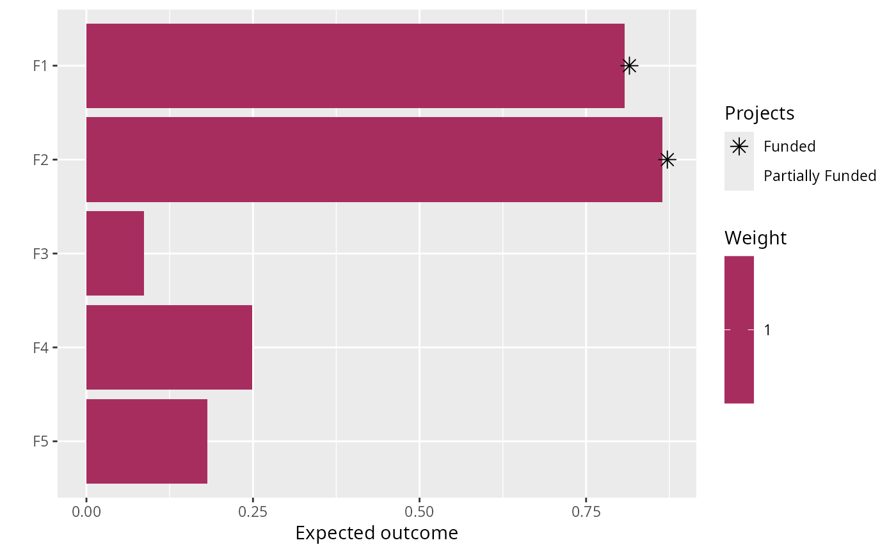

Add a solver to a project prioritization problem to generate solutions
using a backwards step-wise heuristic algorithm
(inspired by Cabeza et al. 2004,
Korte & Vygen 2000, Probert et al. 2016). Ideally,
solutions should be generated using exact algorithm solvers (e.g.,
add_highs_solver() or add_gurobi_solver())
because they are guaranteed to identify optimal solutions (Rodrigues & Gaston
2002).
Arguments
- x
problem()ormulti_problem()object.- number_solutions
integernumber of solutions desired. Defaults to 1. Note that the number of returned solutions can sometimes be less than the argument tonumber_solutionsdepending on the argument tosolution_pool_method, for example if 100 solutions are requested but only 10 unique solutions exist, then only 10 solutions will be returned.- initial_sweep
logicalvalue indicating if projects and actions which exceed the budget should be automatically excluded prior to running the backwards heuristic. This step prevents projects which exceed the budget, and so would never be selected in the final solution, from biasing the cost-sharing calculations. Although this step can improve solution quality, previous algorithms for project prioritization have not used it (e.g., Probert et al. 2016). Defaults toTRUE.- verbose
logicalshould information be printed during optimization? Defaults toTRUE.
Value
A problem() object with the solver added to it.
Details
The heuristic algorithm used to generate solutions is described below. It is heavily inspired by the cost-sharing backwards heuristic algorithm conventionally used to guide the prioritization of species recovery projects (Probert et al. 2016).
All actions and projects are initially selected for funding.
A set of rules are then used to deselect actions and projects based on locked constraints (if any). Specifically, (i) actions which are which are locked out are deselected, and (ii) projects which are associated with actions that are locked out are also deselected.
If the argument to
initial_sweepisTRUE, then a set of rules are then used to deselect actions and projects based on budgetary constraints (if present). Specifically, (i) actions which exceed the budget are deselected, (ii) projects which are associated with a set of actions that exceed the budget are deselected, and (iii) actions which are not associated with any project (excepting locked in actions) are also deselected.If the objective function is to maximize biodiversity subject to budgetary constraints (e.g.,
add_max_wtd_sum_objective()) then go to step 5. Otherwise, if the objective is to minimize cost subject to biodiversity constraints (i.e.add_min_set_objective()) then go to step 7.The next step is repeated until (i) the number of desired solutions is obtained, and (ii) the total cost of the remaining actions that are selected for funding is within the budget. After both of these conditions are met, the algorithm is terminated.
Each of the remaining projects that are currently selected for funding are evaluated according to how much the performance of the solution decreases when the project is deselected for funding, relative to the cost of the project not shared by other remaining projects. This can be expressed mathematically as:
$$ B_j = \frac{V(J) - V(J - j)}{C_j} $$
Here \(J\) is the set of remaining projects currently selected for funding (indexed by \(j\)), \(B_j\) is the benefit associated with funding project \(j\), \(V(J)\) is the objective value associated with the solution where all remaining projects are funded, \(V(J - j)\) is the objective value associated with the solution where all remaining projects except for project \(j\) are funded, and \(C_j\) is the sum cost of all of the actions associated with project \(j\)—excluding locked in actions—with the cost of each action divided by the total number of remaining projects that share the action (e.g., if two projects both share a $100 action, then this action contributes $50 to the overall cost of each project).
The project with the smallest benefit (i.e., \(B_j\) value) is then deselected for funding. In cases where multiple projects have the same benefit (\(B_j\)) value, the project with the greatest overall cost (including actions which are shared among multiple remaining projects) is deselected.
The next step is repeated until (i) the number of desired solutions is obtained or (ii) no action can be deselected for funding without the probability of any feature expecting to persist falling below its target probability of persistence. After one or both of these conditions are met, the algorithm is terminated.
Each of the remaining projects that are currently selected for funding are evaluated according to how much the performance of the solution decreases when the project is deselected for funding, relative to the cost of the project not shared by other remaining projects. This can be expressed mathematically as:
$$ B_j = \frac{\big(\sum_{f}^{F} P_f(J) - T_f \big) - \big( \sum_{f}^{F} P_f(J - j) - T_f \big)}{C_j} $$
Here \(F\) is the set of features (indexed by \(f\)), \(T_f\) is the target for feature \(f\), \(P\) is the set of remaining projects that are selected for funding (indexed by \(j\)), \(C_j\) is the cost of all of the actions associated with project \(j\)—excluding locked in actions—and accounting for shared costs among remaining projects (e.g., if two projects both share a $100 action, then this action contributes $50 to the overall cost of each project), \(B_p\) is the benefit associated with funding project \(p\), \(P(J)\) is probability that each feature is expected to persist when the remaining projects (\(J\)) are funded, and \(P(J - j)\) is the probability that each feature is expected to persist when all the remaining projects except for action \(j\) are funded.
The project with the smallest benefit (i.e., \(B_j\) value) is then deselected for funding. In cases where multiple projects have the same \(B_j\) value, the project with the greatest overall cost (including actions which are shared among multiple remaining projects) is deselected.
References
Rodrigues AS & Gaston KJ (2002) Optimisation in reserve selection procedures—why not? Biological Conservation, 107, 123–129.
Cabeza M, Araujo MB, Wilson RJ, Thomas CD, Cowley MJ & Moilanen A (2004) Combining probabilities of occurrence with spatial reserve design. Journal of Applied Ecology, 41, 252–262.
Korte B & Vygen J (2000) Combinatorial Optimization. Theory and Algorithms. Springer-Verlag, Berlin, Germany.
Probert W, Maloney RF, Mellish B, and Joseph L (2016) Project Prioritisation Protocol (PPP). Formerly available at https://github.com/p-robot (copy available at https://github.com/jeffreyhanson/ppp).
Examples
# \dontrun{
# load ggplot2 package for making plots
library(ggplot2)
# load data
data(sim_projects, sim_features, sim_actions)
# build problem with heuristic solver and $200
p1 <-
problem(
sim_projects, sim_actions, sim_features,
"name", "success", "name", "cost", "name"
) %>%
add_max_wtd_sum_objective(budget = 200) %>%
add_binary_decisions() %>%
add_heuristic_solver()
# print problem
print(p1)
#> Project Prioritization Problem
#> actions: F1_action, F2_action, F3_action, ... (6 actions)
#> projects: F1_project, F2_project, F3_project, ... (6 projects)
#> features: F1, F2, F3, ... (5 features)
#> action costs: continuous values (between 0 and 103.226)
#> project success: proportion values (between 0.814 and 1)
#> objective: maximum weighted sum objective
#> targets: none specified
#> weights: none specified
#> constraints: none specified
#> decisions: binary decision
#> solver: heuristic solver
# solve problem
s1 <- solve(p1)
# print solution
print(s1)
#> # A tibble: 1 × 21
#> solution status cost obj F1_action F2_action F3_action F4_action F5_action
#> <int> <chr> <dbl> <dbl> <dbl> <dbl> <dbl> <dbl> <dbl>
#> 1 1 NA 195. 2.19 1 1 0 0 0
#> # ℹ 12 more variables: baseline_action <dbl>, F1_project <lgl>,
#> # F2_project <lgl>, F3_project <lgl>, F4_project <lgl>, F5_project <lgl>,
#> # baseline_project <lgl>, F1 <dbl>, F2 <dbl>, F3 <dbl>, F4 <dbl>, F5 <dbl>
# plot solution
plot(p1, s1)

# }